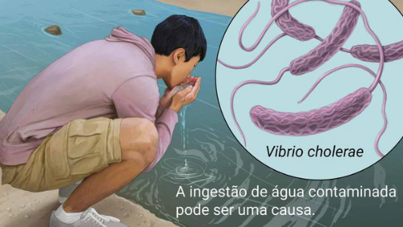
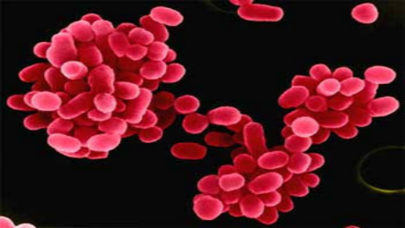
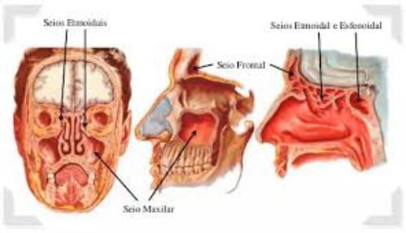
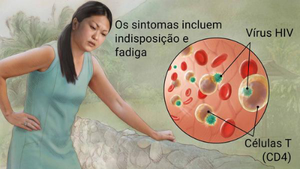

Trabalho De Biologia
Doenças causadas por bactérias
1-Cólera

O Quê É:
Doença bacteriana que causa diarreia grave e desidratação.
Normalmente transmitida pela água.A Cólera é fatal se não for tratada imediatamente.
É uma doença muito rara, Menos de 15 mil casos por ano no brasil.
O tratamento é feito com auxílio médico.
Propaga-se por água ou alimento
contaminado.
Requer um diagnóstico medico.
Sempre requer exames laboratoriais ou de imagem.
Os principais sintomas são diarreia e desidratação. Raramente, choque hemorrágico (quando uma pessoa perde mais de 20% do sangue ou fluido corporal) e convulsões podem ocorrer em casos graves.
Curto prazo:
Resolve-se em dias ou semanas.
Crítico:
Necessita de atendimento de emergência.
2-Febre Maculosa

O Quê É:
Doença infecciosa com uma erupção característica, muitas vezes transmitida pela picada de um carrapato.
A febre maculosa é uma doença possivelmente fatal que costuma ser causada pela picada de um carrapato infectado com bactérias da família Rickettsia.
É uma doença muito rara, Menos de 15 mil casos por ano no brasil.
O tratamento é feito com auxílio médico.
Propaga-se por picadas ou ferroadas de animais ou insetos.
contaminado.
Requer um diagnóstico medico.
Sempre requer exames laboratoriais ou de imagem.
Os sintomas incluem febre, dor de cabeça e dores musculares. Pode haver erupções, geralmente com pele escura ou crosta no local da picada de carrapato.
O tratamento é feito por meio do uso de antibióticos
A febre maculosa responde bem ao tratamento imediato com antibióticos.
Curto prazo:
Resolve-se em dias ou semanas.
Crítico:
Necessita de atendimento de emergência.
Doenças Causadas Por Protozoários
1-Amebiase
O Quê É:
Infecção parasitária do cólon causada pela ameba Entamoeba histolytica.
A amebíase é uma infecção mais comum em áreas tropicais com más condições de saneamento.É uma doença comum, Mais de 150 mil casos por ano no brasil.
Ela é disseminada pela ingestão de alimentos crus, como frutas, que podem ter sido lavados com água local contaminada.
Requer um diagnóstico medico.
Propaga-se por agua ou alimentos contaminado.
Requer um diagnóstico medico.
Sempre requer exames laboratoriais ou de imagem.
Caso haja sintomas, podem ser leves e incluir cólicas e diarreia.
Fezes com sangue, febre e, raramente, abscesso hepático podem ocorrer em casos graves.
O tratamento é feito por meio de cuidados individuais e do uso de antiparasitários
O tratamento inclui antibióticos.
2-Giardíase
O Quê É:
Infecção intestinal causada pelo parasita giárdia.
A giardíase se espalha por alimentos ou água contaminada ou por contato pessoal. É mais comum em áreas com más condições de saneamento e água contaminada.
É uma doença rara, Mais de 150 mil casos por ano no brasil.
O tratamento é feito com auxílio médico
Requer um diagnóstico médico
Sempre requer exames laboratoriais ou de imagem
Transmite-se por água ou alimentos contaminados. E por toque em uma superfície contaminada.
Os sintomas podem incluir diarreia aquosa alternando com fezes gordurosas. Fadiga, cólicas e arrotos também podem ocorrer. Algumas pessoas não apresentam sintomas.
O tratamento é feito por meio do uso de antiparasitários. A maioria dos casos desaparece por conta própria dentro de algumas semanas. Os casos mais graves são tratados com antibióticos.
Curto prazo:
resolve-se em dias ou semanasDoenças Causadas Por Fungos
1-Pneumocistose
O Quê É:
A pneumocistose é uma doença infecciosa oportunista causada pelo fungo Pneumocystis jirovecii, que atinge os pulmões e causa dificuldade para respirar, tosse seca e calafrios, por exemplo.
O tratamento para a pneumocistose é feito de acordo com a recomendação do pneumologista, sendo geralmente indicado o uso de medicamentos antimicrobianos por cerca de 3 semanas.
Os sintomas da pneumocistose são pouco específicos, o que pode fazer com que seja confundida com outras doenças pulmonares. Os principais sintomas dessa doença são:Febre,Tosse seca,Dificuldade para respirar,Calafrios,Dor torácica,Cansaço excessivo.
2-Rinossinusite

O Quê É:
A rinossinusite (RS) é caracterizada pela inflamação da mucosa do nariz e dos seios paranasais, constituindo-se em uma das afecções mais prevalentes das vias aéreas superiores.
A sinusite tanto pode ser causada por agentes infecciosos, como bactérias, fungos e vírus, quanto por fatores alérgicos. Poeira, choque térmico e cheiros ativos são listados como desencadeadores da rinopatia alérgica.
O tratamento da rinossinusite deve se basear na limpeza e desinfecção/desinflamação das cavidades nasais. Lavagem com solução fisiológica, anti-inflamatórios (principalmente os esteroides) e antibióticos são a base do tratamento
Os sintomas da Rinossinusite São: Obstrução nasal,Gotejamento nasal anterior e/ou posterior,Tosse,Dor e/ou pressão facial,Redução ou perda do olfato,Cefaléia (dor de cabeça),Halitose (mau hálito),Dor em arcada dentária,Otalgia ou pressão em ouvidos.
Doenças Causadas Por Vírus
1-Sarampo
O Quê É:
O sarampo é uma doença viral altamente contagiosa e especialmente fatal para crianças pequenas. Existe uma vacina efetiva e segura contra o vírus desde os anos 60, mas os surtos continuam a ocorrer devido à quantidade insuficiente de programas de imunização.
A transmissão pode ocorrer quando uma pessoa infectada com o vírus do sarampo respira, tosse ou espirra. O vírus permanece ativo e contagioso no ar ou em superfícies infectadas por até 2 horas. Também é possível contrair a doença de alguém infectado antes mesmo que esta apresente erupções vermelhas na pele. Quase todos que não se vacinaram contra o sarampo são infectados quando expostos ao vírus.
Não há tratamento específico para a doença
O primeiro sinal é normalmente uma febre muito alta. Outros sintomas que podem ocorrer são tosse, coriza e vermelhidão nos olhos. Na pele, surgem erupções pequenas e vermelhas que começam na cabeça e se espalham para o restante do corpo. Também pode ocorrer diarreia e infecção no ouvido.
2-HIV/AIDS

O Quê É:
A AIDS é causada pelo vírus HIV, que interfere na capacidade do organismo de combater infecções.
Algumas semanas depois da infecção pelo HIV, podem ocorrer sintomas semelhantes aos da gripe, como febre, dor de garganta e fadiga. A doença costuma ser assintomática até evoluir para AIDS. Os sintomas da AIDS incluem perda de peso, febre ou sudorese noturna, fadiga e infecções recorrentes.
O tratamento é feito por meio do uso de antivirais contra o HIV. Não existe cura para a AIDS, mas uma adesão estrita aos regimes antirretrovirais (ARVs) pode retardar significativamente o progresso da doença, bem como prevenir infecções secundárias e complicações.
Por produtos sanguíneos (agulhas sujas ou sangue não testado).
Sua transmissão acontece por sexo vaginal, anal ou oral sem proteção. De mãe para bebê durante a gravidez, parto ou amamentação.Veja abaixo a bibliografia usada:
CLIQUE AQUI